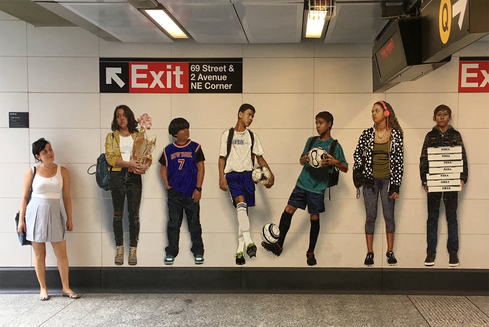

This paper offers a few reflections on Jacques Lacan’s Mirror Phase in relation to the works of American artist Chuck Close. Over the past five decades, Close’s work has focused on large-scale self-portraits, and portraits of the artist’s friends and family. He first gained recognition with his hyper-realistic paintings, but gradually the photo-like portraits evolved into facial portraits comprised of thousands of fragments aligned to a grid. In his later works, each fragment became autonomous, to the extent that the portrait could only be perceived as a coherent image only from a distance.
The experience of looking at the enlarged portraits, with their direct gaze at the viewer, strongly resonates with Jacques Lacan’s description of the Mirror Phase: the constitutive moment at which an infant first perceives their own gestalt image and becomes I – a subject with a sense of self. The different stages of Close’s work throughout the years could be regarded as an illustration sequence to the mirror stage, and also as representations of structured malfunctions within the symbolic system. In this paper I attempt to examine the dialectic manner in which Close’s works are both subjected-to and undermine the symbolic order they depict.
Introduction
Over the past five decades, the work of American artist Chuck Close has focused on large-scale self-portraits, and portraits of the artist’s friends and family. Close first gained recognition with his hyper-realistic paintings, but gradually the photo-like portraits evolved into facial portraits comprised of thousands of fragments aligned to a grid. In his later works, each fragment became autonomous, to the extent that the portrait could be perceived as a coherent image only from a distance.
The experience of looking at the enlarged portraits, with their direct gaze at the viewer, strongly resonates with Jacques Lacan’s description of the Mirror Phase: the constitutive moment at which an infant first perceives their own gestalt image and becomes I – a subject with a sense of self. The different stages of Close’s work throughout the years could be regarded as an illustration sequence to the mirror stage: first the face as the gestalt of the I, then the constitution of the subject through the gaze of the other, through the illusionary fantasy of the dismembered corporal body (or of the face), and finally the incorporation of the subject into the socio-symbolic order.
Close’s portraits could be regarded not only as illustrations but as symptoms - representations of structured malfunctions in the symbolic system. I ask to examine the thematic relations between Close’s work and Lacanian concepts such as the mirror stage, and to examine the dialectic manner in which Close’s works are both subjected-to and undermine the symbolic order they depict.
The Face as Gestalt ׀ Imaginary Identification
1. Photo-Realism as Absolute Gestalt?
The Mirror-Phase is a metaphor for the formation the self. Between the ages 6-18 months, an infant gazes at the mirror for the first time and sees their reflection – a whole figure which the toddler can control its movements and recognize as a glorified version of themselves. The reflection is the gestalt of the infant’s ego, or as Lacan puts it “an exteriority in which his form is certainly more constituent than constituted, but in which it appears to him above all in a contrasting size that fixes it and a symmetry that inverts it […]”[1]
When asked about the manner in which he envisions himself as the subject of a self-portrait, Close admitted he sees himself as “visual information”[2]. Close suffers from ‘face-blindness’, or in its medical term – Prosopagnosia, which is a cognitive-based inability to recognize and/or distinguish between different faces.[3] What makes it difficult for Close to recognize faces is their movement in three dimension. Any slight change in angle of facial expression are, to Close, a representation of an entirely different face. Art researcher Richard Shiff describes it as follows: “[…] every minor alteration in physical presence or emotional mood becomes so noticeable that it renders his recognition for a particular face impossible.”[4]
Prosopagnosia has had a great impact on Close’s work, and first and foremost on his technique.[5] He describes his face-blindness in the following manner:
The first stage in creating these portraits is the photographic documentation of the subjects. Painting based on photography was typical of photo-realist artists, but in Close’s case the two dimensional documentation also made the subject’s face recognizable to him. Close’s portrait subjects are his friends, family members and the artist himself. The portraits are frontal, mugshot-like, with the figures looking straight at the camera/viewer, such as in the painting of Phil (Phillip Glass) [fig.1]. Most portraits lack a facial expression and the figures have a vacant look in their eyes.

[Stefan Smagula / CC BY-NC-SA 2.0, via Wikimedia Commons]
The first portraits Close drew in the 1960’s were exceptionally large – around 2X2.72m, and they were meant to be viewed from a close distance. They were created as a handwork reproduction of something that was created mechanically – not a painting of a face but of a photo of a face. Close created a precise copy of the photographs, including the focus of the camera lens and its shallow depth of field. The original photos were magnified by up to 50 times and exposed each skin pore, hairline, wrinkle and freckle.[7] In order to reach maximal precision Close used to divide the canvas into an orthogonal grid, and painted over it square after square using an airbrush.
The first paintings in this technique were made in black and white. In the 70’s Close began creating color paintings in a technique simulating color prints - stacking layers of magenta, cyan and yellow one on top of the other – in order to create an effect of an enlarged photograph, as we can see with Mark [fig.2]. The use of photography allowed Close to maintain an “objective” appearance of the figures. Objectification is reached by reducing the human face into an array of color stains placed in a certain order, with no hierarchy of detail information or treatment. The only hierarchy in the portraits is found in the nuances of the focal point, which is pre-determined by changes in the camera lens’s depth of field. Moreover, what intensifies the objectification is the impassive expression characteristic of the portraits. Gestalt is achieved, therefore, by reducing the subject into an objective category of an individual.
[Photograph by author]
Close’s paintings present the human face much larger than in reality, and present every detail that might have gone unnoticed by the human eye. Therefore, they summon a prolonged observation of every minor detail, each pore becomes as important as a pupil or a nostril [fig.3]. In this manner a seemingly absolute gestalt is created – the ultimate reflection, the model of the face which is more than the face itself. In a way, the objectification of the human face only enhances the particularity of each portrait. Nonetheless, curator Robert Storr describes the portraits as ones in which “[a] person’s distinguishing traits are lost and found lost again”, and describes Close’s approach to the faces he paints as “a taxonomist studying a specimen”.[9]
Political scientist Jenny Edkins argues the photo-realism is the first step in dismantling the face and breaking gestalt. In his meticulous work, she argues, Close actually translates his face blindness into the canvas by undermining the viewer’s perception of the face in front of them. In the absence of overall gestalt of the face, the viewer is required to meticulously examine each and every detail of the portrait, to come near and step back from the portrait, in order to reassemble a coherent image of the face.[10]
[Photograph by author]
2. Imaginary Identification and the Big Other
Self-consciousness is constituted when the I becomes an object for itself. This Hegelian concepts is described by Lacan as a psychic phenomenon. In order to constitute self-consciousness, the subject must identify themselves with an imaginary other, to put their identity outside of themselves in the image of their double. The subject’s alienation from themselves is constitutive. Lacan refers to this action as imaginary identification:[11]
There is an illusion that the self exists as an autonomous agent a-priori. This is the imaginary self-perception of the subject, intended to prevent the subject from recognizing their dependence in the big Other – which is the symbolic order, the place of all signifiers.[13] Yet, even in the early perceptual stage the otherness exists as something which comes from the individual. The I cannot exist a-priori, it needs be constituted first through the image of the self, and later by the image of the other. The imaginary is the gap between I and the image of I. Once the image becomes an integral part of self-identity, it is made an integral part of human life. This is the transition from the inner world to outer society. Here Lacan adds to Freud’s ego ideal the term ideal ego – the gap between the ideal I lead by the pleasure principal, and the real world which does not allow the ideal I to exist. As a result, Lacan argues that one cannot experience their selfhood but as determined by the outer world.[14] The subject constitutes themselves in their imaginary identification with the gaze of the other, for the gaze of the other. This is the fundamental turning point of the mirror-phase.
Returning to Close, we can now see in the first stage of his work a somewhat figurative metaphor for Lacan’s imaginary identification. The face in the portrait is validated as an image of a subject through the viewer’s look, who recomposes the gestalt of the complete face. But it is not only the viewer who assumes the position of the Other, by also the photographic medium. Opposed to looking in a mirror, or looking at a painting which imitates a mirror reflection, with Close’s paintings the awareness to the Other is intensified because he’s duplicating a photograph. The perception of the I is constituted by an outer perception in itself. The photograph actively makes the Other’s view-point present, and presents reality as mediated by a big Other, which incorporates the depicted self into the symbolic order.
The Fragmented Face | Symbolic Identification
1. Face-in-Pieces
When an infant looks in the mirror they see their entire body for the first time, and can recognize it as themselves. The infant identifies with the figure reflected in the mirror as the “shape” of the ego, the I receives a form and that is in fact the gestalt. The mirror symbolizes the reflection of a consolidated figure which creates the infant’s self-identity, first reflected by their parents and on by the social order.
The infant is (justly) captivated by the relation between their actual body and its reflected image. Against that narcissist experience, when the infant has complete control over their reflection, arises the fantasy of the body-in-pieces or the fragmented body, described by Lacan as “a certain level of disintegration in the individual"[15]. The infant perceives their body as divided by their ontological existence and its image.
Fragmentation is an inseparable part of Close’s work from the beginning. Close reduces the human face to a collection of supposedly arbitrary fragments, set in a specific composition. At first, the fragmentation was disguised by erasing/hiding the grid and creating a united figure. Later on, Close gradually intensified the fragmentation to the point where the fragments became independent objects.
As mentioned, Close used to divide the canvas to a square grid. In his early works the grid was invisible, but in later works he chose to expose it, following different print techniques he had experimented with.[16] He also experimented with different grid sizes, in division to squares and dots, like in the portrait Robert (Chuck Close, Robert/104,072, 1973-74, Synthetic polymer paint and ink with graphite on gessoed canvas, 274.4 x 213.4 cm, Museum of Modern Art, New York, New York), composed of tiny black dots applied with a spray gun, each set inside a single square of a grid. There, one can notice the painting becoming more ‘grained’. Later on, the airbrush was replaced with fingerprints - as in the painting of Fanny [fig.4]. Eventually, the grid disappeared altogether and, in turn, was replaced with projecting photographs on the canvas.
[angela n. / CC BY 2.0
In the mid-1980’s the grid re-appeared in close’s portraits, but in a different way as a result of change in his work technique.[17] The canvas was divided into larger segments, and each segment was filled by colored x-s or circles. The large segments each had a multitude of colors and shapes. From a close look the depicted portrait of Lucas disintegrates into colorful fragments and becomes unrecognizable. Only by looking at the painting from a distance is the re-construction of the gestalt possible [fig.5,6]. Other alterations to the grid, such as uneven spacing, placing the grid diagonal to the canvas or using a radial grid like in Lucas II (Chuck Close, Lucas II, 1987, Oil on canvas, 91.4 x 76.2 cm, Collection Jon and Mary Shirley), intensify the fragmentation. The face dissolves into the background, to the point that a full reconstruction is not always possible. Moreover, the figure on the canvas is dismantled to begin with, and Close serves it to the viewer in a manner which re-evokes the fantasy of the fragmented body.

[Photograph by author]
[Photograph by author]
Unlike Close’s early works, where the viewer is captivated by the hyper objectification of the portraits, in his later works the portraits dissolve. By doing so, Close challenges the level of information needed to depict a portrait.[18] The viewer is left to reassemble the portrait, but the figure behind the portrait always remains lacking.
2. Symbolic Identification and the Interpellation of the Subject
If we could draw a parallel between the first stage of Close’s work and Lancan’s imaginary identification in the mirror stage, then the later stages of his work represent Lacan’s symbolic identification. In order to present the symbolic identification in Close’s portraits, we first need to elaborate several Lacanian concepts.
The moment in which symbolic meaning is fixed is defined by Lacan as the point de capiton (nodal point) – the point at which the signifier and signified are quilted together.[19] The point de capiton has only a structural role, but holds no fixed meaning in itself. Therefore, the process of symbolization is contingent. Slavoj Žižek presents the formation of ideological space as an assembly of signifiers whose identity is not pre-determined, but sewn together into a fixed meaning in the process of ‘ideological quilting’.[20] For instance, Liberal ideology ‘quilts’ the neoclassical architectural style into public buildings that represent the republic, or the largest democracy in the world. Fascist ideology, on the other hand, ‘quilts’ Neoclassicism to buildings that represent subordination of the public to the leader.
What determines an object’s identity then, beyond its descriptive qualities, is its ‘quilting’ into a certain ideological field. Žižek argues that the point de capiton is misconceived as a concentrated place of meaning, giving meaning to all other elements in the ideological field. Whereas, the point de capiton is the embodiment of a lack, a point of pure relativity perceived as identity.[21]
The point de capiton marks the place of the big Other, it is the point through which the subject is ‘sewn’ to the signifier.[22] So what is symbolic identification, then? It is the subject’s identification with a certain signifying trait within the symbolic order.
Imaginary identification is the identification with an image that represents who we would like to be – our ego ideal; whereas symbolic identification is identification with the place from where we are seen, the place from where we observe ourselves – our ideal ego.[23] In the moment of symbolic identification the subject gains an autonomous self-identity, detached from the Other, by identifying with the Other. Symbolic identification constitutes the imaginary identification, which in turn is constituted. The interaction between the imaginary and symbolic identifications creates the mechanism that incorporates the subject into the socio-symbolic order, and thus ends the mirror-phase:
If we examine Close’s fragmented portraits as symbolic spaces, then we can regard the face as a rigid signifier that determines the identity of the various color patches and forms a united object. The color fields of the grid - whether they are round, square, exes of triangles – are actually ‘floating’ signifiers devoid of meaning. Their identity as objects (ear, nose or eye, for instance) is set retroactively through the viewer’s gaze, which gives them a fixed meaning – that is, the gestalt of a subject.
The viewer constitutes the face through symbolic identification with the portrait – identification with the symbolic order of the portrait space. The face painted in the portrait is constituted as an actual subject, through its interpellation into the symbolic order of the artwork [fig.7]. The viewer assembles the face in the portrait by identifying with the place from where they are looking at a fellow subject. What allows them to assemble the pieces of the picture into a gestalt of a figure is the same big Other with whom the identify; and simultaneously it is the place from where they are being watched themselves and constituted as a subject.
[Photograph by author]
The point de capiton - at which the face as signifier ‘sews’ the grid together to create meaning – is perceived as the point where the figure in the portrait is given meaning as a subject. But in fact, it embodies the fact that there is no such subject. By breaking the image into fragments, Close is possibly undermining the existing symbolic order. Recognizing the illusion of the point de capiton disassembles the portrait back to its individual fragments, the face dissolves into the background and the illusive gestalt is stripped of form.
Grid as Screen | Ideological Fantasy
The point de capiton is the point at which the individual is interpellated into a subject by the big Other. The big Other’s desire in relation to the subject is manifested in fantasy – an imaginary representation of fulfilling the desire. Fantasy defines the principals of desire, and at the same time, it is a structural framework through which we experience the world as consistent and meaningful.[26]
Can we regard Close’s grid as a fantastic structure? According to Edkins, the grid functions as a screen concealing the face and making it less recognizable. The face retreats behind the paint. What hides behind the screen is what resists representation. The figure behind the portrait always remains in its lack, and this inconsistency in the symbolic order is concealed by the structure of the grid. Adkins argues that “dismantling the face” means accepting that the signifying system—the social or symbolic order—is incomplete, itself structured around an impossibility.[27]
Žižek defines ideology as a social fantasy “which is possible only on condition that the individuals partaking in it are not aware of its proper logic.”[28] The role of the fantasy is to paint a coherent picture of a homogeneous society, while there is no such society. The fantasy is not located in social theory but in material reality, in the form of an illusory structure.[29]
On an individual level, this is the function of the grid in Close’s later portraits – attempting to create a coherent image of a subject, while the subject in the portraits exists only in its lack. Once we focus our attention on the grid structure, the fantasy dissolves.[fig.8]
[Photograph by author]
The last issue arising from the fantastic quality of the grid is the symptom. Symptom is a pathological failure in the symbolic system. The final stage in Lacanian analysis is identifying with the symptom – acknowledging it as an element that provides consistency in the subject’s being.[30] In order to go beyond the social fantasy, Žižek offers to ‘identify with the social symptom’ – to acknowledge that the characteristics attributed to a socially abnormal object, are necessarily a product of the social structure itself.[31] The dismantled faces in Close’s portraits have also a symptomatic aspect. The fragmentation via the grid is a representation of a structured lack in the artwork’s symbolic space. In going through the symptom, we create a new symbolic reality, so that going through the fragmentation is what re-builds the face, as a result of the symbolic system which constitutes it.
Conclusion
This paper asked to draw the parallels between Close’s artistic work and Lacan’s Mirror-phase, as a stage in the formation of the I and the representation of the I as defined through the eyes of the other. Psychoanalyst Steven Mitchell presents a nice analogy between the work of the analyst and the portrait painter:
The analyst becomes a kind of portrait painter of the patient’s experience, revealing the inner structure of that experience. The problem is that in painting their subjects, portrait painters also are expressing their own sensibility, their own subjectivity, and what they capture on canvas is partly the impact of their personality. [32]
Artists, like psychoanalysts, have a great impact on what on what it is they are trying to understand, and there seems to be no way to factor out or analyze away that impact. There is no “me” awaiting to be captured, either by an artist or an analyst or even by myself. [33]

[1] Jacques Lacan, ‘The Mirror-Phase as a Formative of the Function of the I’, in Mapping Ideology, ed. by Slavoj Žižek (London: Verso, 1994), p.94.
[2] Madeleine Grynsztejn, ‘Navigating the Self: Chuck Close Discusses Portraiture and the Topography of the Face’, Walker Art Center Magazine(Minneapolis, MN, 2005) http://www.walkerart.org/magazine/2005/navigating-the-self [accessed 29 September 2015].
[3] Prosopagnosia is a congenital disorder, but it can also be caused by trauma or following a head injury. From a cognitive aspect, Prosopagnosia is similar to disorders such as Dyslexia or Topographical disorientation.
[4] Richard Shiff, ‘Through a Slow Medium’, in Chuck Close Prints: Process and Collaboration; with an Essay by Richard Shiff, ed. by T Sultan (Princeton, NJ: Princeton Universityl Press, 2003), p. 36.
[5] Biographies and monographs on Chuck Close commonly do not address his face-blindness directly, probably because the disorder was only diagnosed and more researched in recent years.
[6] Oliver Sacks, The Mind’s Eye (London: Picador, 2010), p.91
[7] Jenny Edkins, ‘Dismantling the Face: Landscape for Another Politics?’,Environment and Planning D: Society and Space, 31 (2013), p.544
[8] Lacan. p.96
[9] Robert Storr,Chuck Close (New York: Museun of Modern Art, 1998)
[10] Edkins. p.543
[11] Slavoj Žižek, The Sublime Object of Ideology (London: Verso, 1989), pp.103-104
[12] Lacan. p.94
[13] Žižek, p.104
[14] Lacan. p.96
[15] Ibid
[16] Christopher Finch,Chuck Close: Work (Munich: Prestel, 2007), p.97
[17] In 1988 Close suffered from a collapsed artery in his spinal cord, which hurt his motoric functions and left him partially paralyzed. Though Close had experimented in alterations to his technique prior to his illness, the damage caused to his motor skills held a great influence on his work methods and the detail level of the portraits.
[18] Finch. p.192
[19] Žižek, pp.97-8
[20] Ibid, pp.87-8
[21] Ibid, pp.97-9
[22] Ibid, p.101
[23] Ibid, p.105
[24] Lacan, p.97
[25] Ibid, p.98
[26] Žižek, pp.111-23
[27] Edkins, pp.546,550
[28] Žižek, p.21
[29] Ibid, pp.33,126-7
[30] Ibid, p.75
[31] Ibid, pp.127-128
[32] Stephen A. Mitchell, Hope and Dread in Psychoanalysis (New York: BasicBooks, 1993), p.54
[33] Ibid, p.55